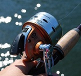
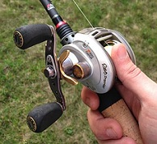
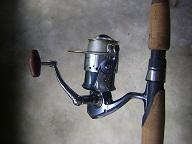

Fishing Gear
This will cover the basics needed to start fishing. It will have a look at three common fishing reels and tackle. When starting out, don't waste your money on the most expensive gear. You don't know if you will like fishing and the chance of you losing lures is high. You will break the bank buying everything you don't need. You do not want to buy a $15 crankbait just to use it a few times because you threw it into water full of weeds.
|  |  |  |
|---|---|---|
| Spincast Reel | Baitcasting Reel | Spinning Reel |
| First reel just about everyone starts with. Low quality and only useable for a few seasons. Less hassle compared to a spinning and baitcasting reel. Great reel for children to use. | High quality compared to spinning and spincast reels. The price is higher and need more maintenence. Can not be used for light gear. If you do, you run the risk of a birds nest. | The most common in the fishing world. They can go from $10 up to $1000. The higher priced reels are better quality. These can be light gear or heavy gear. It all depends on what you want. These reels don't need a lot of maintence. And will last longer with care. |
Fishing Tackle
Once you have a rod and reel combo or a rod and reel, you are going to need tackle to go along with that. To keep this simple and easy, I will break this down into three categories. They will consist of line, lures, and hooks and weights. Don't forget to get a tackle box to store your lures! A handful of sharp hooks isn't fun.
Fishing Line
Fishing line is important. Without it, you can't go fishing. Line is what you want to put a lot of research into. There are three types: monofilament, flurocarbon, and braid. Each one has pro and cons.
Braid:
Good for topwater lures because of it's floating ability. Knot tying is difficult. It is expensive and has a shoter life span than monofilament and flurocarbon. Do not use around rocks or sharp objects.
Monofilament:
Cheapest line on the market. The easiest to find in stores. This line comes standard on most reels purchased. Has a long life span. This line floats, absorbs water, and stretches.
Flurocarbon
Mid-range price. Easier to find in store than braid. This line is optimal for sinking baits or diving baits. An example bait perfect for this line is a crankbait. These baits dive and sinking line gives it the best action and depth. This line is good for going on the reel or being used as a leader.
Fishing Lures
Fishing lures has several categories. Everybody labels them differently. I will break this down into four categories: soft plastics, hard body lures, and bladed baits.
Soft Plastics
One of the most popular lures to use. Purchase brands like YUM
and Zoom if you are interested in dabbling with soft plastics.
These two brands are cheap and give you a decent number of plastics.
The issue with soft plastics is the color choice. You have to know
what color to pick based on the water and clarity you fish.
Remember to pick plastics that will attract fish. Pretty colors are
good at sucking people in too! A little guide to help you will be below.
Clear Water: Natural colors like Green Pumpkin. You can
use plastics that also has glitter inside them.
Stained Water: Bright colors like Bubblegum or Chartreuse. Or
for contrast, use Black or Junebug.
Murky Water: Same as stained water.
Hard Body Lures
The most popular hard body lures known are crankbaits and anything that works on the top of the water, also know as top water baits. Other lures include jerkbaits and swimbaits. Crankbaits mimic dying or injured fish and have a rattle inside them. These make fish strike because of the vibration and easy chance of food. When it's a cold, cloudy day, break out a topwater bait. Bass commonly attack because the surface will be cool. When a fish bites, it will look like an explosion in the water.
Bladed Baits
Bladed baits are spinnerbaits, chatterbaits, and buzzbaits. They had some kind of motion on them. Another lure I'm adding to this list is a Spoon. The most common one you see is the red and white pattern called a Dardevle. (Pronounced dare devil.) These baits are reaction baits. When fishing is rough, these have vibrations to help fish find it's location.
Terminal Tackle
Terminal tackle is hooks, weights, barrel swivels, snap swivels,
and anything that can be tied to the line. We are going to talk about
hooks and weights.
There are several brands of hooks. Buy hooks that are multi-use.
Your tackle box will be filled with several types of hook if you
buy them for one task. Two hooks worth keeping around and supplied
are Weedless Hooks and EWG (extra wide gap) Hooks. EWG hooks help
rig soft plastics you buy. Weedless hooks are great for Wacky Rigs
and navagating water with a lot of weeds to get hung up on.
Don't be intimidated by all the weight styles and sizes you see in
a store. The many weights have different uses. Egg sinkers and
bullet weights are perfect for Texas Rigs and Carolina Rigs.
Splitshot weights are good for people using bobbers (some people call
them floats). A good use for splitshots is modifying a Wacky Rig.
Pinch on a few a few inches above your hook. For the size, the
bigger you pick, the faster they sink. Fish will be able to detect
the bigger sized weight compared to something small. Watch out for
tungsten weights so you don't accidentally grab them. Not every store
sells them and they cost more than lead weights. Tungsten requires less
materials to make and that's what makes them good.